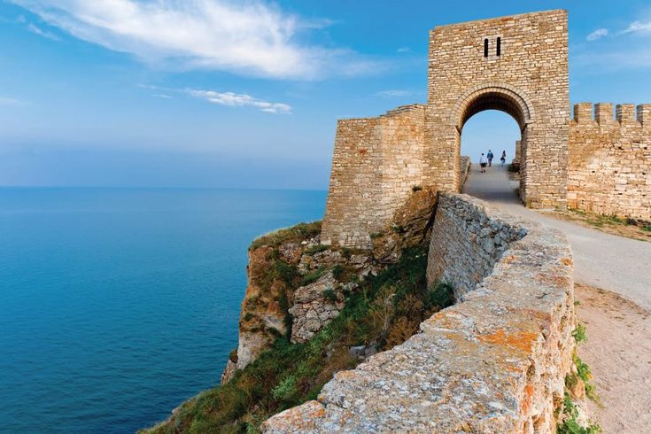
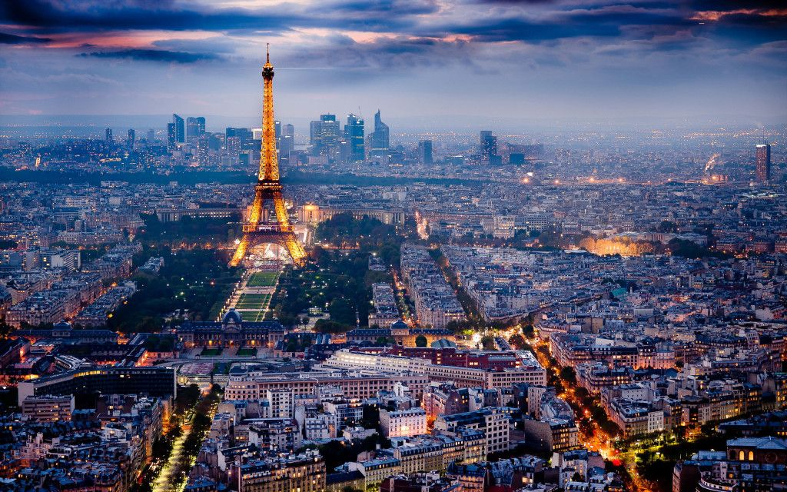

Учебник по география
Добре дошли в интерактивния учебник по география. Изберете страна за да научите повече:
България
България е страна в Югоизточна Европа с богата история и красиви пейзажи
Връщане към начало.
Опознай Родината, за да я обикнеш!—Aleko Konstantinov
САЩ
Съединените щати на Америка са голяма страна в Северна Америка с разнообразна география и култура.
Връщане към начало.
Where liberty dwells, there is my country.—Benjamin Franklin
Франция
Франция е известна с красивите си пейзажи, изкуството и кухнята си.
Връщане към начало.
If you are lucky enough to have lived in Paris as a young man, then wherever you go for the rest of your life it stays with you, for Paris is a moveable feast—Ernest Hemingway
Занзибар
Занзибар (на суахили: Zanzibar) е полуавтономна област в рамките на Танзания, наследник на бивша държава със столица в едноименния град. Заема по-голямата част от архипелага Занзибар и включва два основни острова — Пемба и Унгуджа.
Интересни факти
-
Занзибар не е един остров
Занзибар не е само един остров. Архипелагът се състои от няколко малки острови и два големи – Unguja (неофициално наричан Занзибар) и Pemba – и е полуавтономна област на Танзания.
-
12 часа ден и 12 часа нощ през цялата година
Денонощието в Занзибар е разделено на 12 часа ден и 12 часа нощ, заради близостта му до Екватора. С няколко минути разлика, изгревът и залезът са по едно и също време през цялата година. Температурата през деня е около 28 и 32 градуса, а през нощта – между 20 и 25 градуса.
-
Столицата на Занзибар не е Стоун Таун
Столицата не е Стоун Таун (Stone Town), a град Занзибар (Zanzibar City). Стоун Таун е историческият център, който се намира в старата част на града. Известен е с архитектурата си от XIX в., която е смесица от местната култура суахили и елементи от мавританската, арабската, персийската, индийската и европейската култура. Включен е в списъка на Световното културно и природно наследство на ЮНЕСКО.
-
Занзибар е известен с подправките си
Подправките са основна част от икономиката на Занзибар, затова и островите се наричат Spice Islands. Отглеждат се главно карамфил, индийско орехче, канела и черен пипер.
-
Фреди Меркюри е роден в Занзибар
Фреди Меркюри от групата Queen е роден в Занзибар през 1946 г. Рожденото му име е Фарук Булсара. Къщата, в която е живял в Стоун Таун, в момента е туристическа атракция. Има също и Freddie Mercury ресторант и магазин за сувенири.
Връщане към начало.
A crowded ferry ride away from Tanzania’s coastal city, Dar es Salaam, Zanzibar is a marvel for the senses. Every sight and smell is provocative, inspiring a sense of the old and new.—Jodi Balfour
Финландия
Финла̀ндия (на фински: Suomi), официално Репу̀блика Финла̀ндия е държава, разположена в Североизточна Европа. Граничи с Балтийско море на югозапад и с Финския залив на югоизток. Съседните ѝ страни са Швеция, Норвегия и Русия.
Итересни факти
Връщане към начало.
The morning is wiser than the evening.